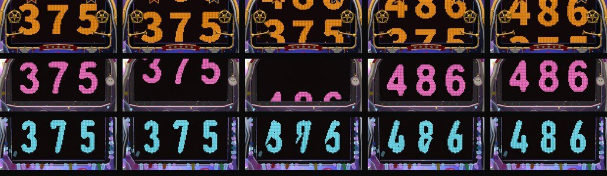
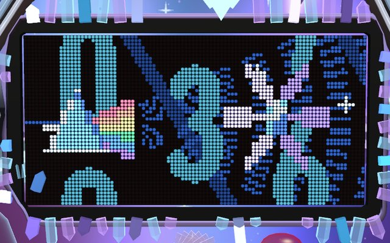

Last modified: 2026-11-24 (Tue)
CRYSTAL

The new machine, a breakthrough-type (totsuha-gata) ST machine. Half of the heso jackpots go straight into Crystal RUSH (12 spins of ST). The other half are 3R normal jackpots followed by 50 spins of jitan (time-short mode), where you try to pull back into the RUSH. Has right-shooting. Four units on the west end of the front (south) row of the island.
Contents
Specs
| Jackpot odds | 1/119.8 |
|---|---|
| In RUSH | 1/8.0 |
| RUSH | 12 spins of ST (Crystal RUSH) |
| Continuation | About 80% |
| Jitan | 50 spins (after a 3R normal jackpot) |
| Entry rate | About 67% (pull-backs included) |
| Rounds | 10R / 3R (10 counts per round) |
| Balls out | 10R about 800 / 3R about 240 |
| Payout | Heso 3 / den-chu 7 / attacker 8 / side pockets 3 |
| Payback | About 141% (estimate) |
* A breakthrough type is a machine where only some first jackpots go into the RUSH. The pull-back rate in 50 spins of jitan is about 34%. Border: still being checked.
Jackpot split
| 10R (ST) | 3R (ST) | 3R normal (50 spins of jitan) | |
|---|---|---|---|
| Heso | 5% | 45% | 50% |
| Den-chu | 40% | 60% | None |
* 777 is 10R, other odd numbers are 3R ST, even numbers are 3R normal. Even numbers still get an upgrade chance. Every den-chu jackpot is ST.
Futo and densapo
| Normal | RUSH / jitan | |
|---|---|---|
| Futo hit | 1/16 | 9/10 |
| Futo spin | 12 s | 1.2 s |
| Den-chu opens | 0.15 s x1 | 1.6 s x2 |
* The den-chu pays 7 balls, so you barely lose balls during the RUSH and jitan.
How to shoot
- Strength is automatic. When you take a machine it shoots at the strength that spins the most
- Right-shooting is automatic during jackpots, the RUSH and jitan
- The board and nails are completely different from STAR PARADE
| Left-shooting | A long row of guide nails leads to the windmill at the upper left. The road nails slope steeply and balls can spill off in two places |
|---|---|
| Right-shooting | The through gate under the windmill on the right shoulder, then the den-chu a bit below the middle on the right, then the wide attacker at the lower right |
Modes (Crystal RUSH and jitan)
| Mode | Odds | How to tell |
|---|---|---|
| Normal | 1/119.8 | Plain frame. The idle screen scrolls "◆ CRYSTAL ◆" |
| Crystal RUSH | 1/8.0 | Light runs around the screen frame and the spins left show on the top edge. The crystal flower on the board opens and glows |
| Jitan | 1/119.8 | Blue frame. The spins left show on the top edge |
- After an ST jackpot you get the RUSH (12 spins of ST at 1/8.0). Hit within those 12 and you get another RUSH. Miss them all and it's back to normal
- Going in shows "クリスタルRUSH!" (Crystal RUSH!)
- A 3R normal jackpot gives 50 spins of jitan. Shoot right for the den-chu, and a den-chu jackpot takes you into the RUSH
- Both the RUSH and jitan count down from 5
Board and gimmicks
Crystals surround the screen, with a faceted dome above it. Below the screen are the crystal flower gimmick and the patlamp. The flower is usually a closed bud. It opens a little on a super reach or better, and opens fully and glows during jackpots and the RUSH.


* The machine and board photos were taken before the machines arrived. The numbers are light blue now, and there are fewer nails below the heso.
Reliability tables
Reliability matches STAR PARADE. Only the notice names are different.
* Reliability is how often it turns into a jackpot when that effect shows up (analysis value, normal mode). 50% and up, and guaranteed effects, are in red.
Hold color
| Color | Reliability |
|---|---|
| Blue | 1.7% |
| Green | 7.0% |
| Red | 31.0% |
| Gold | 64.1% |
| Rainbow | Guaranteed |
Reach
| Effect | Reliability |
|---|---|
| Normal reach | 3.1% |
| Super reach | 25.4% |
| Full rotation | Guaranteed |
| Final battle (PUSH) | 51.6% |
Notices
| Color | Crystal Snow | Prism |
|---|---|---|
| Any color | 1.3% | 18.4% |
| White | 0.2% | 3.5% |
| Blue | 0.7% | 10.1% |
| Green | 1.7% | 23.1% |
| Red | 6.3% | 52.9% |
| Gold | 23.5% | 83.8% |
| Rainbow | Guaranteed | Guaranteed |
Omens (characters running along the top)
| Effect | Reliability |
|---|---|
| Friends (3) | 1.1% |
| Big parade (6) | 2.6% |
| Gold | 12.9% |
| Rainbow | 66.0% |
Notices during a reach
| Effect | Reliability |
|---|---|
| Crystal Snow | 14.8% |
| Prism | 30.2% |
Step-up notice
| Effect | Reliability |
|---|---|
| Up to step 1 | 4.3% |
| Up to step 2 | 10.6% |
| Up to step 3 | 34.1% |
| Up to step 4 | 66.9% |
| Up to step 5 | 91.0% |
Gijiren (pseudo re-spin)
| Effect | Reliability |
|---|---|
| ×2 | 6.0% |
| ×3 | 28.7% |
| ×4 | 50.9% |
Guaranteed effects
Rainbow hold, blackout, patlamp at spin start, revival, freeze, all lights out
Step-up and gijiren reliability is the same as STAR PARADE. For the other effects see STAR PARADE reliability tables (CRYSTAL has no star gimmick). Reel style reliability: still being checked.
Effects guide
Numbers and reel styles
The numbers are light blue and shaped like cut crystals. The usual reel style is "crystal": the numbers switch with a diagonal cut. Sometimes they spin in other styles too: vertical, upside down, page flip, drum or shuffle.


| Machine | Numbers | Usual reel style |
|---|---|---|
| STAR PARADE | Orange | Scrolls vertically |
| RABBIT HOLE | Pink and puffy | Hop (the numbers jump and swap) |
| CRYSTAL | Light blue crystal cut | Crystal (switches diagonally) |
Holds
The hold lamps are below the display, 4 for the heso and 4 for the den-chu. Colors go blue, green, red, gold, rainbow. Gold and up is gekiatsu, rainbow is guaranteed.
Notices
- Crystal Snow is the weak one. Small crystals drift down and sometimes flash in a cross
- Prism is the hot one. A prism slides in from the left, and on the right a crystal flower goes from bud to half open to open, then glows and spins. Light beams behind it
- Both have 6 colors (white, blue, green, red, gold, rainbow). Prism red and up is gekiatsu, rainbow is guaranteed
- Notices also show up during a reach. Omens are the small crystals and flowers running along the top strip


Reach
- During a super, a crystal and a flower on the dot display cheer you on. The flower on the right opens from a bud, and on a jackpot it blooms fully (rainbow petals) and spins
- When a super starts, the crystal flower on the board opens a little too
- In the final battle a PUSH button appears in front of the dot display. 51.6%
Patlamp
The rotating lamp at the lower right of the display. If it spins, it's a jackpot. The timing is the same as STAR PARADE.
Premiums, hidden features and trivia
* Spoilers. Click to open
Premiums (guaranteed jackpot)
| Effect | What happens |
|---|---|
| Blackout | A long blackout at spin start, then straight into full rotation |
| Freeze | Everything stops and goes silent the moment the spin starts, then a flash and straight into full rotation |
| All lights out | The screen and cabinet lights all go dark and silent, then a flash and straight into full rotation |
| Patlamp at spin start | The patlamp spins right at the start of the spin |
| Rainbow | Rainbow hold, rainbow notice (Crystal Snow / Prism) |
| Full rotation | Only comes after a blackout, freeze or all lights out. Lines up 333 or 777. Spins to the very end and stops in rainbow |
| Revival | Fakes a miss on a super, then hits |
* Blackout, freeze and all lights out only appear on ST jackpots in normal mode. Each one runs long and flashy and goes straight into full rotation (333 or 777).
Hidden features
- Upgrade chance: at the end of a jackpot that lined up on an even number, "昇格チャンス" (Upgrade Chance) appears and the numbers spin again. Stop on odd and it's "確変昇格!!" (Kakuhen upgrade!!) into the RUSH. Stop on even and it's "チャンスタイム!" (Chance Time!) with 50 spins of jitan. 30% of 3R ST jackpots line up on even first and then upgrade. 40% of 3R normal jackpots try the upgrade and fail
- Hold sakiyomi (look-ahead): a hold can show one or two colors below its real color when it goes in. It moves up one step at a time while it waits, and whatever is left goes up as a chance-up at spin start. If a white hold just flickers at spin start, that's a gase (fake-out)
- Chance Zone: a look-ahead zone that appears when 2 or more holds are queued ahead. On a miss it only shows up when that spin turns into a super reach
Trivia
- Chance pattern 311: a no-reach miss that stops on 311 flashes gold and bounces. 60.7%. It never stops on 311 by coincidence
- Gijiren stops on runs like 123 or 456. The "もう一回!" (One more!) text goes up in color: green, red, gold
- No notices, step-ups, gijiren or spin-start effects during the RUSH or jitan
- Occult ①-⑤ works (How the parlor works)
Data counter

On top of the machine: jackpots, streak, starts and last time, plus how many people are in the parlor. You can also check it on the status board in the rest area (CRYSTAL's band is light blue).